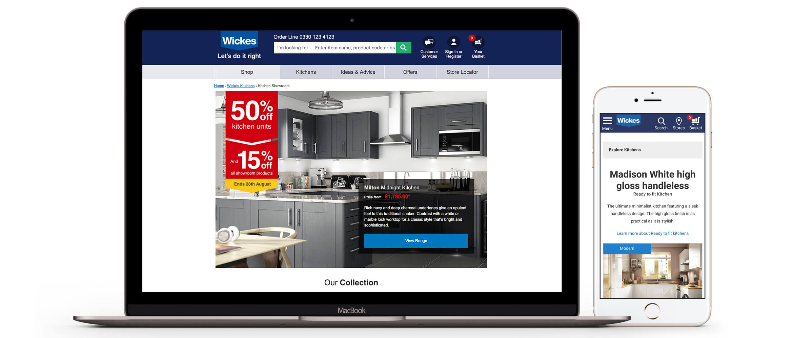

The Wickes kitchens proposition is one of the most successful sectors of the business. The online offering however, was lacking and the customer journey was flawed in many ways with hidden pages, incomplete and incorrect information. Stakeholders believed that an online Kitchen experience is the first step customers take before committing on a service direction.
Goals
Key Performance Indicators
Wickes is fairly unique in that it has two different types of kitchen customer. There is ‘Ready To Fit’ Kitchens which are more of a budget, DIY proposition that are all available to order online. The other proposition is ‘Showroom’ kitchens which are more bespoke and premium. We needed to establish whether this differentiation was clear to users.
The project started with a kick-off workshop with all major stakeholders of the project in which we laid out the entire existing journey and identified where they thought the experience came up short. We also did a bit of ‘gamestorming’ where we asked how we could make the experience worse. This was followed by an in-depth analysis of our competitors online offerings and what we could learn from them. Research was done around web trends and technology and what could work for us, all the time being sure to keep in mind our IT and budget restraints.
We created an end to end map of the journey interaction points and simplified to create a more linear path towards the target pages and ascertained what needed to be added or removed from the journey. We then wireframed a new journey based on this.
We designed hi-fidelity prototypes of the top level pages for the first round of user testing. These were tested on 5 different individuals/couples at our testing partners studio in London. Participants were chosen from a variety of age groups and backgrounds and all were in different stages of the process of buying a kitchen. A total of 4 rounds of testing were conducted over 4 weeks with iterations to the prototypes being made in between according to our findings.
From our process we then started the final designs and coding. We did this in 2 week Agile sprints. A total of 4 sprints were required with a week ‘mop up’ at the end.
The A/B testing was done through the Monetate platform and initially ran on a 90/10 split (in favour of control). It then moved to 75/25. Iterations continued to be made as we identified pain points in the journey before it was moved to 100%.
Results